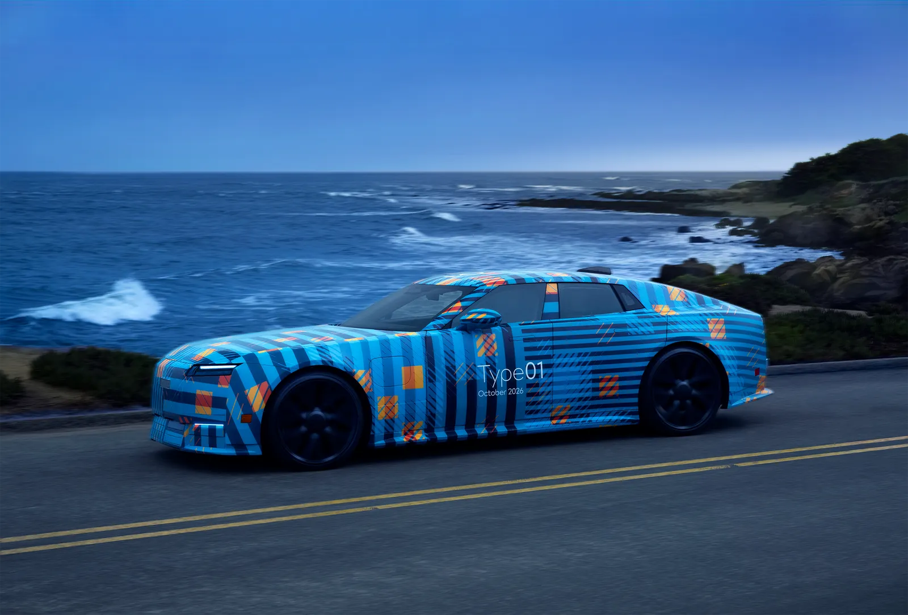
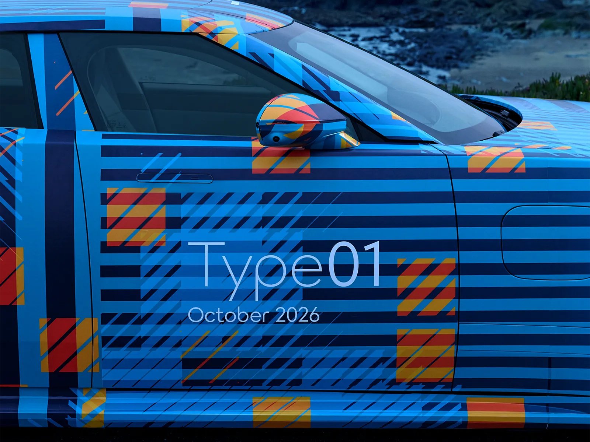
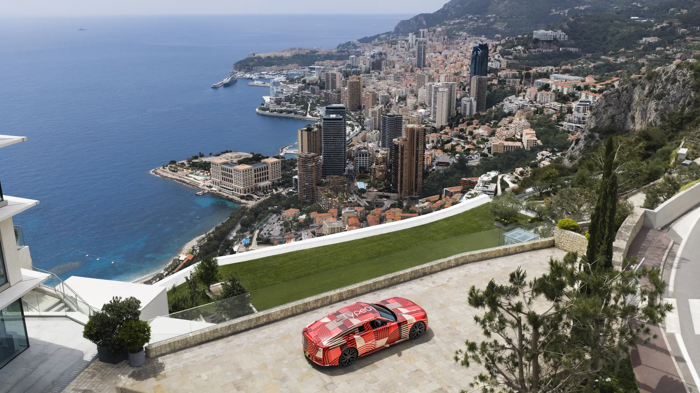
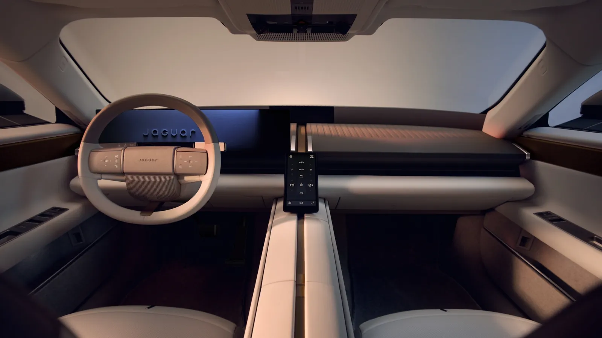
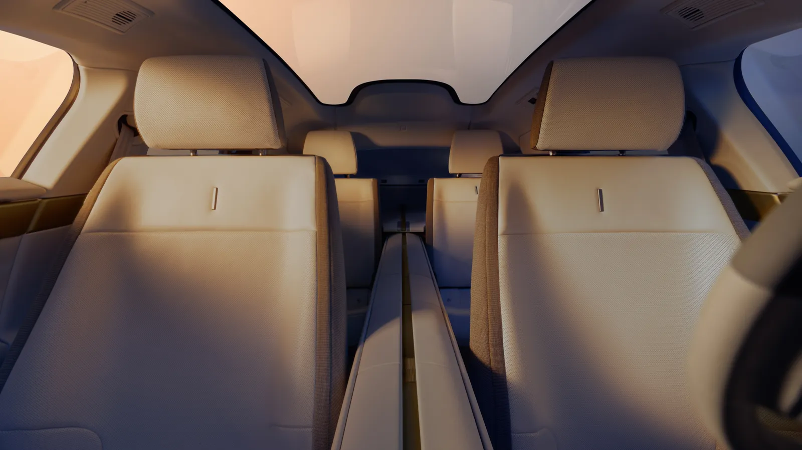
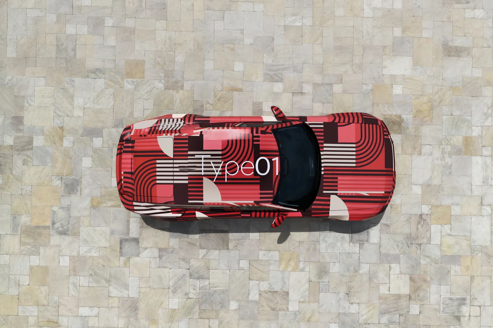
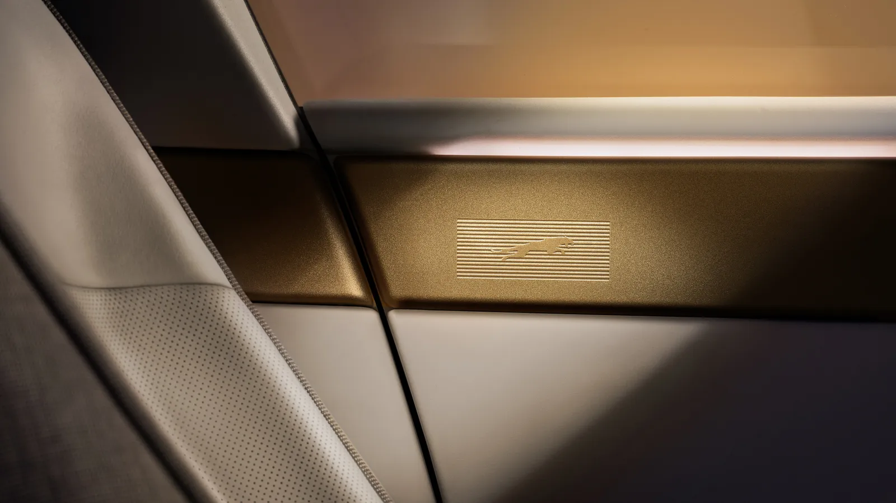
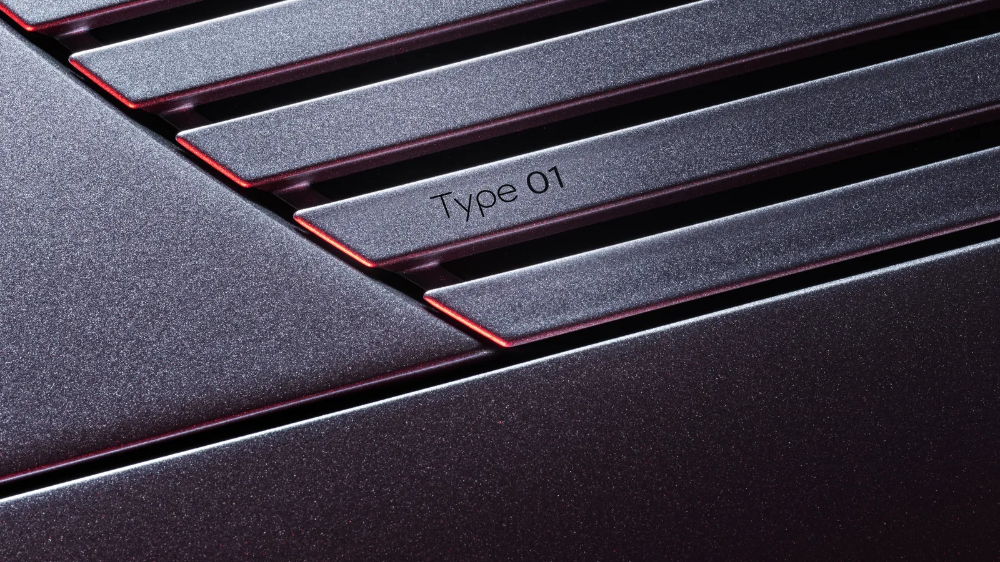

▲ 공식 프로토타입 사진: 위장 래핑을 두른 재규어 타입 01. 양산형 최종 외관은 10월 6일 공개 예정 ⓒ Jaguar Land Rover (JLR Media)
"1,000PS는 이미 확정인데, 가격표와 배터리 용량은 아직이다." 재규어가 10월 6일(현지 시간) 뉴욕에서 양산형 전기 GT 타입 01(Type 01)을 세계 최초로 공개한다. 콘셉트카 타입 00이 2024년 12월 마이애미에서 처음 모습을 드러낸 지 약 22개월 만이다. 이 글은 공개를 닷새 앞둔 10월 1일 기준으로, 재규어가 직접 밝힌 것과 언론이 전하는 것, 그리고 아직 아무도 확인하지 못한 것을 갈라 정리한다.
JLR(재규어랜드로버) 미디어센터의 5월 13일 '이름 확정' 보도자료와 8월 12일 실내 공개 자료 원문을 열어 대조했고, Autocar·Fleet News·Auto Express·Autocar India 보도를 교차했다. 실내 디자인 자체는 "화면 대신 돌을 깔았다"… 재규어 타입 01, 스크린 시대에 던지는 역질문에서 다뤘으므로 여기서는 간단히만 짚는다. 공개 결과를 예단하지 않고, 공개 후에야 확인될 항목을 체크포인트로 남기는 데 초점을 둔다.
1. 일정부터: 10월 6일 뉴욕, 어디까지가 확정인가
공개 시점과 장소는 이 차에서 가장 단단한 사실이다. 재규어가 8월 12일 실내 이미지를 배포하면서 "오는 10월 6일 뉴욕에서 공개"라고 밝혔고, Fleet News도 같은 날짜로 보도했다. 6월 17일 JLR 투자자의 날에서 렌나르트 호어닉(Lennard Hoornik) 최고상업책임자가 "아주, 아주 특별한 방식으로 공개하겠다"고만 말한 것이 뉴욕 개최의 첫 신호였다고 Autocar는 전했다. 구체적인 행사 형식은 아직 공개되지 않았다.

▲ 8월 12일 JLR 페블비치 출품 소식과 함께 배포된 파란색 새 랩 프로토타입의 앞문 부분. 문짝에 'Type01 / October 2026' 문구가 들어가 있고 차체 형상은 래핑으로 가려져 있다 ⓒ Jaguar Land Rover (JLR Media)
| 시점 | 무슨 일이 있었나 | 근거 |
|---|---|---|
| 2024년 12월 | 콘셉트 '타입 00' 마이애미 아트위크 공개, 브랜드 리브랜딩 시작. 이때 "2025년 말 공개할 영국 생산 4도어 GT"의 목표로 WLTP 최대 770km(478마일)·EPA 430마일, 15분에 최대 321km(200마일) 충전을 제시 | JLR(재규어) 보도자료 |
| 2026년 2월 2일 | Top Gear가 시험주행 프로토타입(PT3, 시험차 150대 중 한 대) 시승기 게재. 850V·350kW·120kWh 등 기술 설명 인용 | Top Gear 보도 |
| 2026년 5월 13일 | 양산차 이름 '타입 01' 확정, 모나코 E-프릭스에 위장 프로토타입 등장 | JLR 보도자료 |
| 2026년 6월 17일 | 투자자의 날, "10월 뉴욕 공개" 언급 및 "재규어는 전기차 전용" 재확인(PB 발라지 CEO) | Autocar 보도 |
| 2026년 8월 12일 | 실내 이미지 최초 공개, "10월 6일 뉴욕" 명시. 같은 자료에서 8월 16일 페블비치 출품 예고 | JLR 보도자료 |
| 2026년 8월 16일(일) | 몬터레이 카 위크 페블비치 콩쿠르에 새 위장 랩의 프로토타입이 북미 첫 공개(재규어 설명). 외관은 가리고 실내를 전면 공개 | JLR 보도자료(8/12, 사전 안내) |
| 2026년 10월 6일 | 양산형 세계 최초 공개 예정 | 재규어 발표(예정) |
타임라인에서 8월 16일은 단계적 공개의 한 장면이었다. JLR 자료는 이 프로토타입이 "몬터레이 카 위크를 위한 새 랩"을 두르고 페블비치 콩쿠르 일요일(16일)에 북미에서 처음 선보이며, 이 행사가 재규어의 유산을 기리는 자리가 된다고 설명했다. 5월 모나코(빨간 랩), 8월 몬터레이(파란 랩)로 무대를 옮기며 외관은 가린 채 이름과 실내만 차례로 푸는 방식이다. 10월 6일에 비로소 위장이 벗겨질지는 재규어가 밝히지 않았고, 뒤의 체크포인트에도 반영했다.

▲ 5월 모나코 E-프릭스 주간에 배포된 드론 구도 사진. 모나코 시가지와 지중해를 배경으로 빨간 랩 프로토타입이 놓여 있다 ⓒ Jaguar Land Rover (JLR Media)
한 가지 눈여겨볼 점은 일정이 한 번에 정해진 것이 아니라는 사실이다. Autocar India는 양산형 공개가 당초 예정보다 밀려 10월로 확정됐다고 전하며 "두 번째 연기"라고 표현했다(이전 목표는 2026년 9월). 이 보도 외에 지연 사유를 설명한 재규어 측 공식 입장은 확인하지 못했다.
2. 재규어가 직접 말한 것: 공식 확정 항목
5월 13일 JLR 보도자료 원문에서 확인되는 사양은 많지 않다. 재규어는 이 차를 "새 럭셔리 4도어 GT"로 규정했고, 이름의 뜻은 '타입'이 C-Type·E-Type·F-TYPE으로 이어진 계보를, '0'이 전기 구동과 배기가스 제로를, '1'이 새 시대의 첫 재규어를 뜻한다고 설명했다. 파워트레인은 "트라이모터 기술로 1,000PS 이상, 1,300Nm 이상의 토크"라고 못 박았고, "영국의 심장부에서 설계·개발·생산한다"고 밝혔다.

▲ 5월 모나코 E-프릭스 주간에 선보인 빨간색 위장 프로토타입. 이 시점 보도자료에는 항속거리와 충전 성능이 포함되지 않았다 ⓒ Jaguar Land Rover (JLR Media)
| 항목 | 내용 |
|---|---|
| 차종 | 럭셔리 4도어 GT, 순수 전기차 |
| 구동 | 트라이모터, 1,000PS 이상 · 1,300Nm 이상 |
| 플랫폼 | 재규어 일렉트릭 아키텍처(JEA) 첫 양산차 |
| 생산 | 영국에서 설계·개발·생산 (정확한 공장 명시는 확인 못 함) |
| 실내 | 실내 중앙을 길게 가르는 '센트럴 스파인'으로 4개의 개별 공간, 브라스 느낌 마감, 문 상단 재규어 리퍼 각인, 윈드스크린 하단 중앙에 디지털 후방 영상 디스플레이(ClearSight) |
| 공개 | 10월 6일 뉴욕 |

▲ 8월 12일 JLR이 배포한 타입 01 실내. 운전석 앞 얇은 디스플레이와 센터 쪽으로 길게 뻗은 척추 구조가 보인다 ⓒ Jaguar Land Rover (JLR Media)
8월 실내 공개 때 재규어의 수석 인테리어 디자이너 토머스 홀든(Thomas Holden)은 "진정성 있는 소재, 필요할 때만 나타나는 기술, 절제된 흐름의 표면"이라고 설명했고, 로던 글로버(Rawdon Glover) 재규어 매니징 디렉터는 이 차를 "새 창조 철학을 따르는 첫 양산차"라고 불렀다. 반면 파워트레인·배터리·가격에 대해서는 8월 자료에도 언급이 없었다. 8월 자료에는 이 차가 JEA 위에 올라간 첫 양산 재규어이며 "영국의 심장부에서 설계·개발·생산"한다는 문구가 반복됐다.

▲ 8월 11~12일 공개된 실내 이미지 중 앞좌석 위쪽에서 본 구도. 앞좌석 사이로 이어지는 중앙 구조물(센트럴 스파인)과 밝은 가죽 시트가 보인다 ⓒ Jaguar Land Rover (JLR Media)
3. 숫자는 돌아다니지만: 출처가 갈리는 항목
항속거리·충전·배터리 같은 핵심 수치는 출처마다 취급이 다르다. Fleet News는 "재규어가 이전에 WLTP 최대 478마일, 급속충전 15분에 최대 200마일을 목표로 한다고 밝혔다"고 썼는데, 이 '이전'의 원문은 2024년 12월 타입 00 공개 때의 JLR 보도자료다. 이 자료는 영국에서 만들 첫 신세대 양산 재규어(4도어 GT)가 "최대 770km(478마일) WLTP 또는 430마일(692km) EPA, 급속충전 시 최대 321km(200마일)를 15분 만에 추가"하는 것을 목표로 한다고 적었다(별표 단서 포함). 5월 13일·8월 12일 자료 본문에는 이 수치가 다시 나오지 않는다.
흥미로운 점은 그 뒤의 보도다. 2월 2일 Top Gear 시승기는 재규어가 EPA 기준 약 400마일을 겨냥하며 이는 WLTP 약 434마일에 해당한다고 썼고, Auto Express와 Carscoops도 약 435마일로 적었다. 2024년 12월의 478마일(WLTP) 목표와 다르다. 재규어가 목표를 낮췄는지, 기사마다 기준이 다른지는 확인하지 못했다. 이 기사에서는 478마일을 '2024년 목표값'으로, 434~435마일을 '2026년 보도 수치'로 구분해 적는다. 아래 표는 이런 차이를 그대로 표시했다.
| 항목 | 보도된 값 | 확인 수준 |
|---|---|---|
| 최고출력 | 1,000PS 이상 (약 986hp) | 재규어 공식 확정(하한값) |
| 토크 | 1,300Nm 이상 | 재규어 공식 확정(하한값) |
| WLTP 항속거리 | 최대 478마일(약 770km) vs 약 434~435마일 | 478마일은 2024년 12월 JLR 보도자료의 '목표'. 434~435마일은 Top Gear(2/2)·Auto Express·Carscoops 보도. 현재 목표값은 미확정 |
| EPA 항속거리 | 430마일(2024년 목표) vs 약 400마일(Top Gear 인용) | JLR 2024년 12월 자료 / Top Gear 보도 |
| 급속충전 | 15분에 최대 200마일(321km) | JLR 2024년 12월 자료의 '목표'. Auto Express는 "재규어가 350kW로 15분 안에 200마일을 추가할 수 있다고 한다"고 전함 |
| 배터리 용량 | 약 120kWh(사용 가능 용량, NMC 각형 셀 200개) | Top Gear 시승기·Auto Express 보도. 재규어 보도자료 원문에서는 확인 못 함 |
| 충전 출력·전압 | 350kW, 850V | Top Gear·Auto Express가 재규어 설명으로 인용. 보도자료 원문 확인 못 함 |
| 크기·중량 | 전장 약 5.2m, 전폭 2m 이상, 전고 1.4m 미만 / 약 2,700kg(Robb Report는 "거의 3톤") | 크기는 Top Gear 시승기, 중량은 Auto Express·Carscoops 보도. 공식 확인 못 함 |
| 0→100km/h | "3초 남짓"(Auto Express), 최고속도 250km/h 목표(Carscoops) | 매체 추정·인용, 공식 확인 못 함 |
눈여겨볼 대목은 '이상'이라는 표현이다. 출력과 토크는 하한값으로 발표됐기 때문에 실제 공개 때 숫자가 그대로일지, 더 높게 확정될지는 알 수 없다. 반대로 항속거리는 "목표"라는 단어가 붙어 있어 실제 인증값과 다를 수 있다.
필자가 열어본 범위에서 재규어 공식 문서로 확인되는 것은 출력·토크·생산지·플랫폼·실내와 2024년의 목표값뿐이다. 나머지는 매체를 통해 전달된 설명이다. 이 구분이 이 기사의 기준이다.
4. 시승기에서 나온 기술 단서: 공식은 아니지만 구체적인 것들
Top Gear는 2월 2일 시험주행용 프로토타입 'PT3'(시험차 150대 중 초기 차량) 시승기에서 재규어 엔지니어들의 설명을 상당히 자세히 전했다. 아래는 그중 다른 보도와 겹치거나 구체적인 항목이다. 시승 시점은 '타입 00' 시절이고 이후 사양이 바뀌었을 수 있다.

▲ 위에서 내려다본 빨간 랩 프로토타입. 긴 보닛과 뒤로 물러선 캐빈, 차체 위 Type01 표기가 확인된다. 위장 래핑이라 최종 외관은 아니다 ⓒ Jaguar Land Rover (JLR Media)
| 항목 | 내용 | 비고 |
|---|---|---|
| 구동 구성 | 앞 1개·뒤 2개의 영구자석 동기모터. 앞 모터 350bhp, 뒤 두 모터 합산 950bhp 수준 | 시험차 값, 공식 '1,000PS 이상'과 직접 비교 불가 |
| 효율 제어 | 순항 중 뒤쪽 구동 유닛(인버터 포함) 비활성화 가능, 필요 시 2밀리초 이내 재가동 | 엔지니어 설명 인용 |
| 배터리 배치 | 120kWh(사용 가능), 앞쪽에 32셀 스택 추가, 재규어 고유 구성 | NMC 각형 셀 200개 |
| 전기 시스템 | 850V, 최대 350kW 충전, 충전구는 앞쪽 양옆 | 접속 박스를 앞 스트럿 브레이스에 통합(재규어 특허) |
| 차체 | 전장 5.2m·전폭 2m 초과·전고 1.4m 미만, 알루미늄 위주에 핵심부 고장력강 | 시승기 서술 |
| 섀시 | 후륜 독립 토크 제어(ITV), 후륜 조향 최대 6도 | 양산 사양 확정 여부는 공개 때 확인 |
다만 이 표는 프로토타입 시승 시점의 보도라는 한계가 있다. 같은 시승기에서 항속거리는 EPA 약 400마일(WLTP 434마일)로 소개됐고, 이는 2024년 12월 자료의 478마일과 다르다. 공개 당일 어느 수치가 나오는지는 가장 확인하기 쉬운 체크포인트 중 하나다.
5. 가격·주문·인도: 보도가 엇갈리는 구간
가격과 인도 시기는 재규어의 공식 보도자료·발표문에서 확인하지 못했다. 다만 Auto Express는 롤런 글로버(Rawdon Glover) 재규어 매니징 디렉터의 발언을 인용해 "진입 가격은 약 12만 파운드, 브랜드의 '무게중심'은 약 14만 파운드"이며 "주문은 연내 시작, 고객 인도는 2027년 여름"이라고 전했다(발언 시점은 기사에 명시되지 않아 확인 못 함). Autocar는 가격대를 "약 12만 파운드에서 15만 파운드 이상(고사양·맞춤형)", 시장 출시를 2027년 상반기로 적으며 재규어가 BMW·메르세데스 같은 프리미엄 브랜드와 벤틀리·애스턴마틴 같은 최상위 럭셔리 사이를 노린다고 전했다. Fleet News는 "예상 시작가 10만 파운드 이상", Carscoops는 미국 기준 약 16만 달러부터를 예상했다.
글로버는 이 가격대가 "조건부"라며 "잘 만들어야 하고, 놀라운 수준의 서비스가 필요하며, 훌륭해야 한다"고 했고, 롤스로이스·벤틀리가 28만 파운드 이상인 데서 그 아래 비어 있는 자리를 겨냥한다고 설명했다고 Auto Express는 전했다. 트림을 여러 단계로 나누지 않고 기본형에 맞춤 제작(비스포크)과 소량 한정 모델을 얹는 방식이라는 설명도 같은 기사에 있다.

▲ 문 상단 패널에 새긴 재규어 리퍼. 재규어는 이를 "시그니처 아트피스"급 디테일로 소개했다 ⓒ Jaguar Land Rover (JLR Media)
| 매체 | 가격 | 주문·인도 |
|---|---|---|
| Autocar | 약 12만~15만 파운드 이상 | 2027년 상반기 시장 출시 |
| Auto Express | 진입 약 12만, 중심 약 14만 파운드(글로버 MD 발언 인용) | 연내 주문 개시, 고객 인도 2027년 여름(글로버 MD 발언 인용) |
| Fleet News | 예상 시작가 10만 파운드 초과 | 명시 없음 |
| Carscoops(4월) | 미국 약 16만 달러부터 예상 | 2027년 판매 시작 |
| Autocar India | 명시 없음(인도 현지 예상가만 언급) | 2027년 상반기 도착 |
'시장 출시 2027년 상반기'(Autocar)와 '고객 인도 2027년 여름'(Auto Express)은 출시와 인도를 서로 다른 시점으로 보면 모순이 아닐 수도 있다. 다만 같은 시기를 가리키는지 확인할 방법이 없어, 공개 현장에서 재규어가 공식 일정을 내놓는지가 가장 확실한 해소 지점이다. 어느 쪽이 맞는다고 단정할 근거는 없다.
6. 한국에서는 언제 볼 수 있나
한국 출시 일정, 국내 가격, 재규어 코리아의 발표는 확인하지 못했다. 국내 매체들도 10월 6일 뉴욕 공개와 실내 디자인을 전하는 수준이다. 재규어는 공개 장소를 미국으로 고른 이유에 대해 별도 설명을 내지 않았지만, Autocar는 마이애미에 이어 뉴욕을 택한 것이 미국을 핵심 시장으로 본다는 신호라고 해석했다. 이는 해석이지 재규어의 발표가 아니다. 한국 시장 진출 여부는 공개 이후 국내 법인 발표를 기다려야 한다. 영국 가격(12만 파운드 안팎)을 단순 환산해 국내 가격을 가늠하는 것도 무리다. 세금·관세·옵션 구성이 달라 국내 발표 전에는 숫자로 단정할 수 없다.

▲ 5월 13일 배포된 디테일 이미지. 재규어는 "Type 01" 이름이 보닛과 윈드스크린이 만나는 줄무늬 모티프에 들어간다고 설명했다 ⓒ Jaguar Land Rover (JLR Media)
7. 10월 6일 공개에서 확인할 체크포인트
✅ 공개 현장에서 답이 나와야 할 질문들
· 위장막을 벗은 실제 외관이 2024년 타입 00 콘셉트와 얼마나 같은가(5월 모나코, 8월 몬터레이에서도 외관은 가려졌다)
· 배터리 용량(120kWh 보도의 사실 여부)과 WLTP 항속거리가 공식 숫자로 나오는가. 2024년 목표 478마일인지, 2026년 보도 434~435마일에 가까운지
· 출력·토크가 '1,000PS 이상' 하한을 넘어 구체적 숫자로 발표되는가
· 중량(약 2.7톤 보도)과 0→100km/h 가속 시간
· 공식 가격 또는 가격대, 주문 개시일, 인도 시기가 발표되는가(진입 12만 파운드·연내 주문·2027년 여름 인도 발언과 맞는지)
· 생산 공장이 구체적으로 어디인지
· 미국 외 시장(한국 포함) 판매 계획 언급 여부
· 파생 모델(Autocar는 대형 SUV·리무진 가능성 보도) 언급 여부, 단 이는 공식 확인되지 않은 내용
위 항목은 모두 '무엇을 확인해야 하는가'이지 결과 예측이 아니다. 공개 후 각 항목이 확정되면 이 기사의 확인 수준 표를 기준으로 갱신 여부를 다시 점검할 예정이다.
8. 독자가 가장 궁금해할 질문 5가지
| 질문 | 현재 답 | 근거 수준 |
|---|---|---|
| 언제 살 수 있나? | 주문은 연내, 고객 인도는 2027년 여름(Auto Express·글로버 발언) 또는 시장 출시 2027년 상반기(Autocar) | 보도, 재규어 공식 발표 전 |
| 얼마인가? | 영국 기준 약 12만 파운드부터, 맞춤형은 15만 파운드 이상 보도 | 보도, 공식 가격 없음 |
| 충전은 얼마나 걸리나? | 15분에 최대 200마일 추가가 재규어 목표(2024년 12월 자료). 350kW 충전은 Top Gear·Auto Express 인용 | 목표값/보도 |
| 하이브리드나 내연기관 버전은? | 없다는 입장. 6월 투자자의 날에서 PB 발라지 CEO가 재규어는 전기차 전용이라고 재확인(Autocar 보도) | 보도(경영진 발언) |
| 후속 모델은? | Autocar는 JEA를 쓰는 대형 리무진·SUV가 다음 차례일 가능성과 '타입 02·03' 명칭 가능성을 보도. 재규어 공식 확인은 아직 없음 | 보도(비공식) |
10월 6일 뉴욕 공개, 트라이모터 1,000PS 이상·1,300Nm 이상, 영국 생산, 실내 구조는 재규어가 직접 확인해 준 사실이다. 반면 항속거리 478마일·충전 15분 200마일은 2024년 12월 재규어가 '목표'로 밝힌 수치이고, 2026년 보도는 WLTP 434~435마일로 달리 적는다. 배터리 120kWh·충전 350kW·전장 5.2m는 시승기와 매체가 재규어 설명으로 인용한 수준이며 중량은 매체 보도다.
가격(약 12만~15만 파운드)과 인도 시기(2027년 상반기 또는 여름)는 재규어 경영진 발언을 인용한 보도일 뿐 공식 발표 문서를 확인하지 못했고, 한국 출시도 확인된 바 없다. 공개 당일 발표 내용에 따라 이 모든 항목이 바뀔 수 있으므로, 구매를 고려한다면 공식 발표를 기다리는 편이 안전하다.